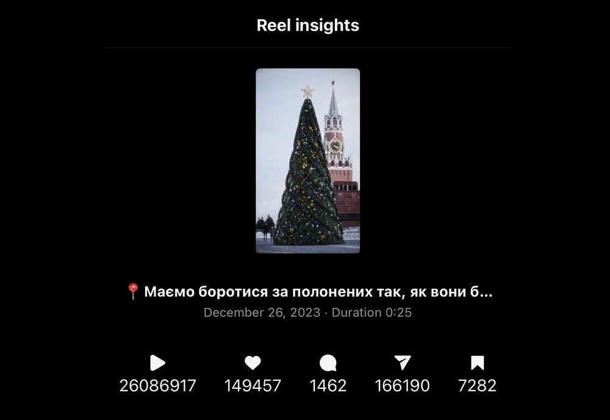

Uncovering russian crimes against Ukrainian POWs
On Christmas Eve, when most people celebrate with their families, the families of Ukrainian prisoners of war do not know if their loved ones are even alive. For over 1.5 years, russia has been hiding their condition and location, violating international laws and regulations. The only way we can help the POWs now is by keeping them in the spotlight. For that, we created a viral digital campaign with a viral video in its core.
The video went viral with 26M views. It was shown on national television, posted by major Ukrainian media outlets, and shared more than 166K times. It raised awareness of the hardship of captured defenders both in Ukraine and abroad, and brought them back in the spotlight.
